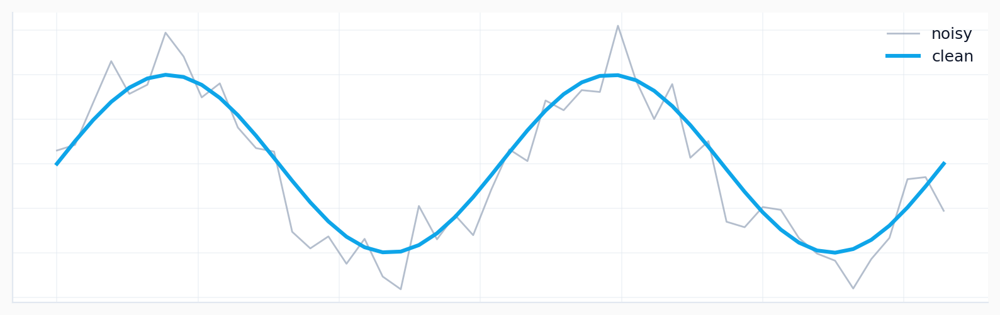
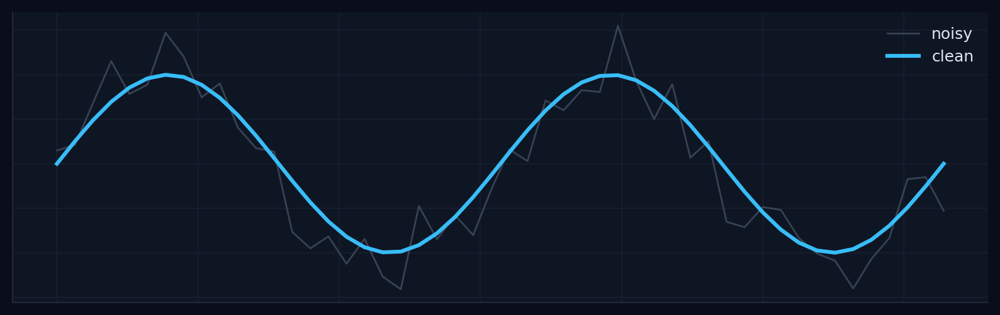
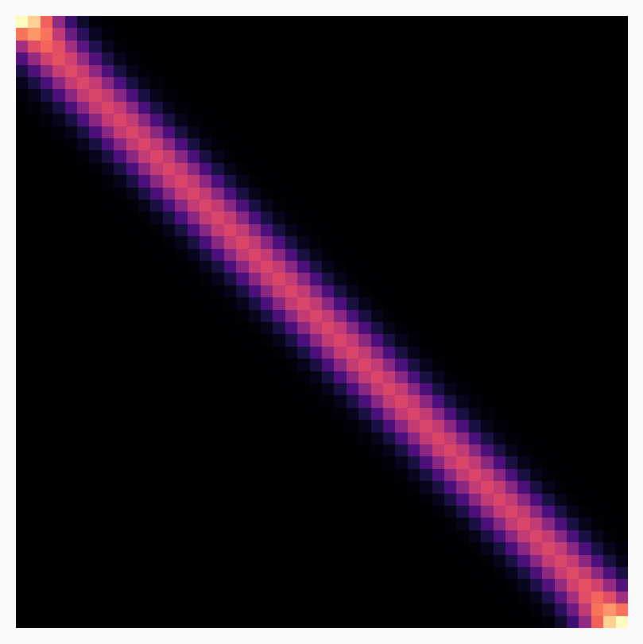
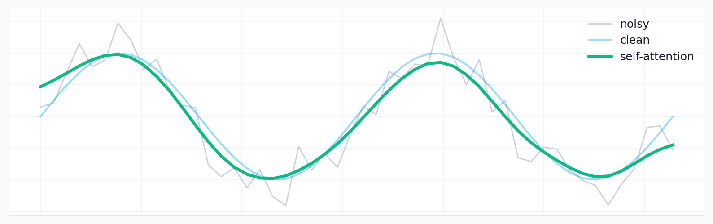

Self-Attention
Self-attention is the core mechanism behind transformers. In this post we'll try to build some intuition for how it actually works.
The idea is fairly simple: for every pair of tokens we compute an attention score, and we use those scores to take a weighted average of the values. That's it — the rest is just choosing how to compute the scores.


The trick is that the scores aren't fixed: we project the input through three learned weight matrices — $Q$ (queries), $K$ (keys), and $V$ (values) — and let the data decide who pays attention to whom.


All of this is captured in a single formula:
$$ \text{Attention}(Q, K, V) = \text{softmax}\!\left(\frac{QK^T}{\sqrt{d_k}}\right) V $$To see what this actually buys us, let's try it on a concrete toy problem: denoising a sine wave.


A natural way to clean this up is local averaging: every token should look mostly at its neighbors. To get attention to do that, we augment each input with its position and hand-craft $W_Q$ and $W_K$ so that $Q$ and $K$ attend by position, while $V$ simply carries the signal value through.
This works, but the attention pattern ends up too flat. The dot product $q_i \cdot k_j$ reduces to $\text{pos}_i \times \text{pos}_j$, which grows with position rather than peaking when $i$ and $j$ are close — so we don't get the localized Gaussian shape we'd like.
Here's the key insight: we can engineer $Q$ and $K$ so that their dot product computes $-(p_i - p_j)^2$. After softmax, this gives a proper Gaussian centered on the diagonal. Expanding the square,
$$ -(p_i - p_j)^2 = -p_i^2 + 2\,p_i\,p_j - p_j^2, $$we see that each term only depends on $p_i$ or $p_j$, not both. So if we add quadratic position features to the input and route each term to its own dimension via $W_Q$ and $W_K$, the dot product reconstructs $-(p_i - p_j)^2$ for free:
X_4d = np.column_stack([noisy_signal, positions, positions**2, np.ones(n)])
W_Q = np.array([ # Q_i = [sqrt(2)*pos_i, -pos_i^2, 1]
[0, 0, 0],
[np.sqrt(2), 0, 0],
[0, -1, 0],
[0, 0, 1],
])
W_K = np.array([ # K_j = [sqrt(2)*pos_j, 1, -pos_j^2]
[0, 0, 0],
[np.sqrt(2), 0, 0],
[0, 0, -1],
[0, 1, 0],
])
scores = (X_4d @ W_Q) @ (X_4d @ W_K).T # = -(pos_i - pos_j)^2
weights = softmax(scores / temperature)

The heatmap now shows a clean diagonal band: each token attends most strongly to its neighbors, and the denoised output looks much closer to the underlying sine. What's worth pausing on is that this pattern wasn't hard-coded as a kernel — it emerged from a couple of linear projections and a softmax. That's the whole point of self-attention.


Takeaway
Self-attention is, at its core, a weighted average — with the twist that the weights are computed from the data itself. With the right $Q$, $K$, and $V$ projections, a single head can already recover something as familiar as local smoothing. But the same machinery is free to learn far richer relationships: long-range dependencies, content-based matching, syntactic structure — things no fixed filter could ever express.